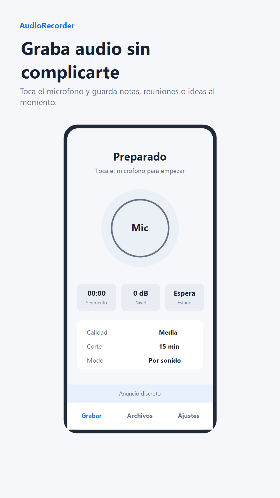
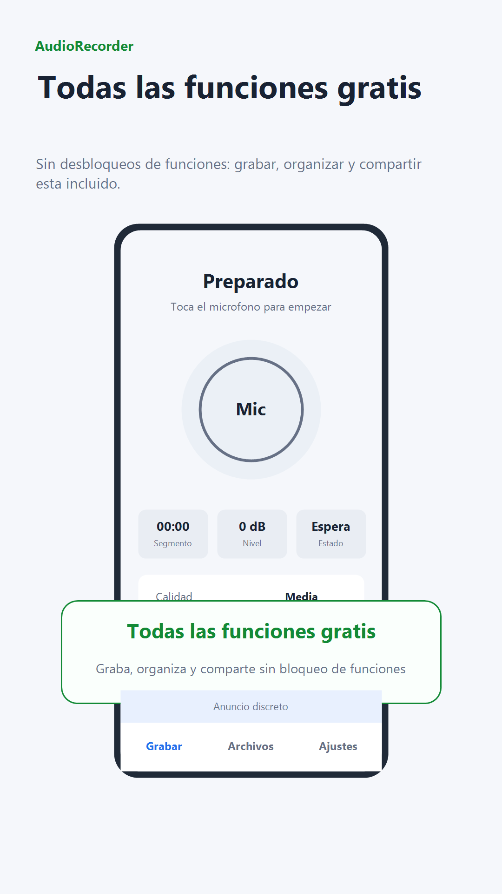
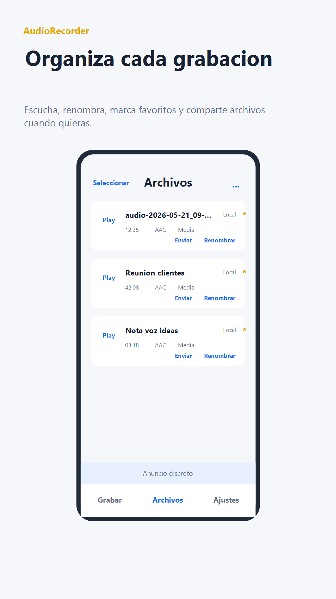
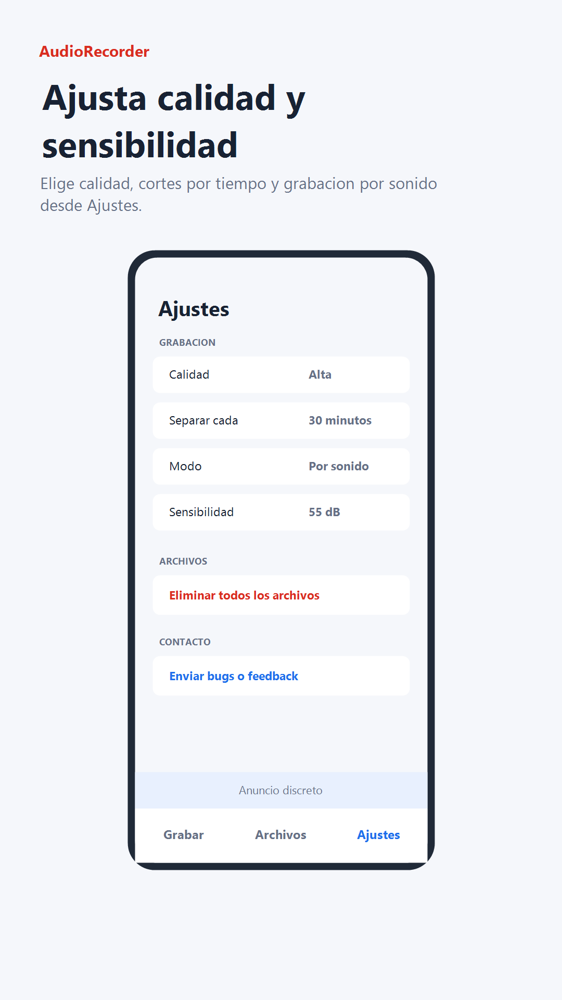

Imagen pendiente
google-play/es-ES/icon.png
google-play/es-ES/icon.png
AudioRecorder
Krazel
Grabadora gratis con cortes, modo por sonido y envío manual.
Sin datosDescargas
TodosContenido
GratisPrecio
Vista previa local. No publica ni sube nada a Google Play.
Capturas




Acerca de esta app
AudioRecorder es una grabadora sencilla para guardar notas de voz, reuniones, ideas y audio del día a día.
Todas las funciones principales son gratis: grabar audio, elegir calidad, separar archivos por intervalos, usar grabación por sonido, reproducir grabaciones, marcar favoritos, renombrar archivos, eliminar grabaciones y compartirlas manualmente con otras apps.
Funciones principales:
- Grabación de audio desde el micrófono.
- Segmentación configurable: no separar, 5, 15, 30, 60 o 120 minutos.
- Calidad muy baja, baja, media o alta.
- Modo todo o modo por sonido.
- Sensibilidad ajustable para grabación por sonido.
- Biblioteca local de grabaciones.
- Reproducción integrada.
- Favoritos y selección múltiple.
- Renombrar, eliminar y compartir archivos.
- Opción de grabar al abrir la app.
- Contacto directo para bugs o feedback.
La app guarda las grabaciones en el dispositivo y permite compartirlas manualmente mediante la hoja nativa del sistema.
Datos de preparacion
Package IDcom.dmkr.audio
Track previstoqa
Version1.0
Idiomaes-ES